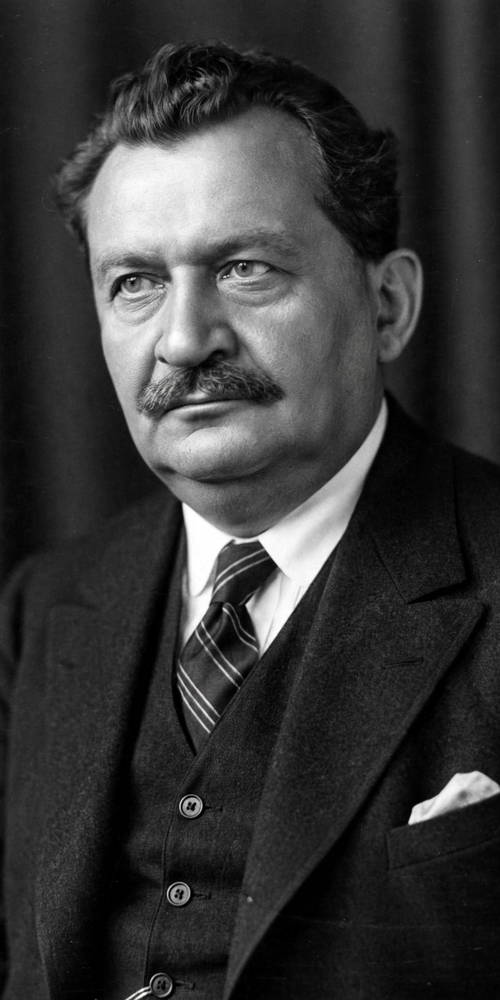

From Wikipedia, the free encyclopedia
| Otto Wels | |
|---|---|
 Otto Wels (1873–1939) | |
| Born | 15 September 1873, Berlin, German Empire |
| Died | 16 September 1939 (aged 66), Paris, France |
| Occupation | Politician; Chairman of the SPD (1919–1933, in exile to 1939) |
| Known for | Speech against the Enabling Act, 23 March 1933 |
Otto Wels (15 September 1873 – 16 September 1939) was a German politician and chairman of the Social Democratic Party of Germany (SPD) from 1919 until his death in exile. He is best remembered for his speech in the Reichstag on 23 March 1933 opposing Adolf Hitler's Enabling Act — the only speech made against the Act in the debate, delivered while SA men lined the chamber of the Kroll Opera House.
Born in Berlin, the son of an innkeeper, Wels trained as a paper-hanger and upholsterer and joined the SPD in 1891. He rose through the party's Berlin organisation, was elected to the Reichstag in 1912, and served on the Berlin city council. During the November Revolution of 1918 he was city commandant of Berlin and a leading figure in suppressing the Spartacist uprising; after Friedrich Ebert's death he and Hermann Müller led the party, with Wels as organisational chairman.
After Hitler's appointment as Chancellor and the terror unleashed under the Reichstag Fire Decree, the SPD's deputies — their KPD colleagues already arrested or in flight — gathered in the Kroll Opera House on 23 March 1933. Wels, already ill and aware he might be arrested, defended the Weimar record and declared: "Freedom and life can be taken from us, but not our honour." He concluded: "We greet the persecuted and the oppressed. We greet our friends in the Reich. Their steadfastness and loyalty deserve admiration." The SPD's 94 deputies present voted no; the Act passed 444–94. Hitler, in reply, shouted that he did not want the SPD's votes.
Wels escaped to the Saar and then Prague, where the SPD executive in exile (the Sopade) published reports documenting Nazi terror. Stripped of his citizenship, he moved to Paris in 1938 and died there on 16 September 1939, a fortnight after the Second World War began.
Wels's speech is taught in German schools as an emblem of democratic courage, and his words close the SPD's self-understanding of its resistance. Streets and the SPD hall in many cities bear his name.